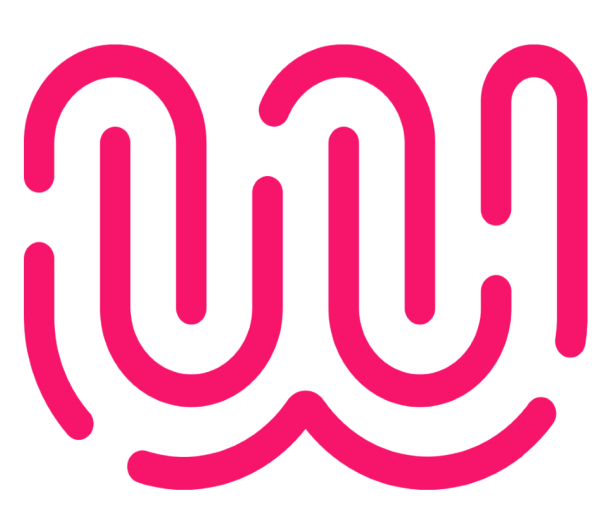

Dans quel but ?
L’alternance sera une occasion, pour moi, de valider mes compétences acquises et celles que je vais acquérir, par l’obtention d’un titre RNCP.
Elle me permettra également de mettre mes compétences et mon appétit de pratique au service d’une entreprise, au cours des 15 prochains mois.